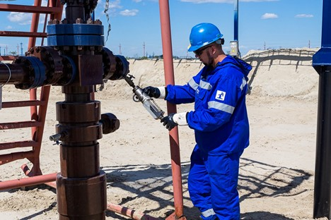

Разделы

Раздел: Эксплуатация
Эксплуатация нефти может быть классифицирована на основе различных критериев. Некоторые из них включают:
-
Способ извлечения:
- Природно-технологический метод: включает разработку нефтяных месторождений путем использования естественного давления скважин или использование искусственных методов, таких как внедрение воды, пара или газа для поддержания давления в скважинах и повышения добычи нефти.
- Нефтяной и газовый фонд: метод добычи нефти с использованием газового и нефтяного фонда, который образуется во время добычи газа или нефти.
-
Местоположение:
- Сухопутная эксплуатация: включает добычу нефти на суше, как правило, внутри страны.
- Морская эксплуатация: проводится на континентальном шельфе, в глубоководных или прибрежных месторождениях.
-
Основная цель:
- Экономическая добыча нефти: фокусируется на максимизации экономической выгоды от добычи нефти.
- Техническое исследование: имеет цель разработать и применить новые технологии и методы для улучшения добычи нефти.
-
Тип месторождения:
- Конвенциональные месторождения: легко доступные и промышленно эксплуатируемые месторождения с хорошо определенными структурами и высокой проницаемостью горных пород.
- Неконвенциональные месторождения: требуют специальных технологий и методов добычи, таких как извлечение из сланцевых или песчаных формаций, очистка из битуминозных песков или морские месторождения.
-
Состояние месторождения:
- Новые месторождения: только начинаются разрабатываться и эксплуатироваться.
- Заканчивающиеся месторождения: исчерпанное месторождение, где добыча нефти снижается и скоро будет прекращена.
